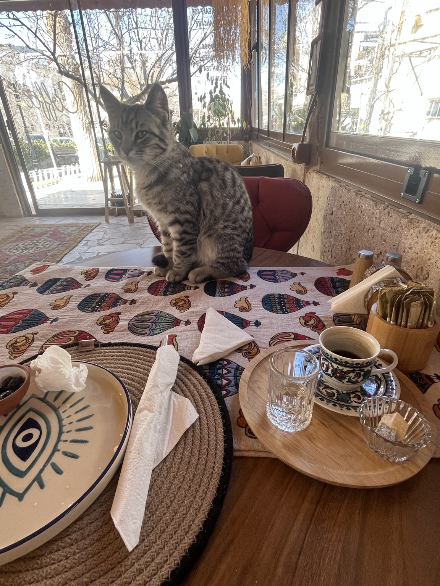

I have been to many cafes, but this one stood out. I was far from Japan, in Turkey. Normally, time feels precious when you travel. But here, I felt the opposite. I didn’t mind staying longer. In fact, I wanted to stay and do nothing. Time felt slower. Softer. Coming from Tokyo, this feeling stayed with me.